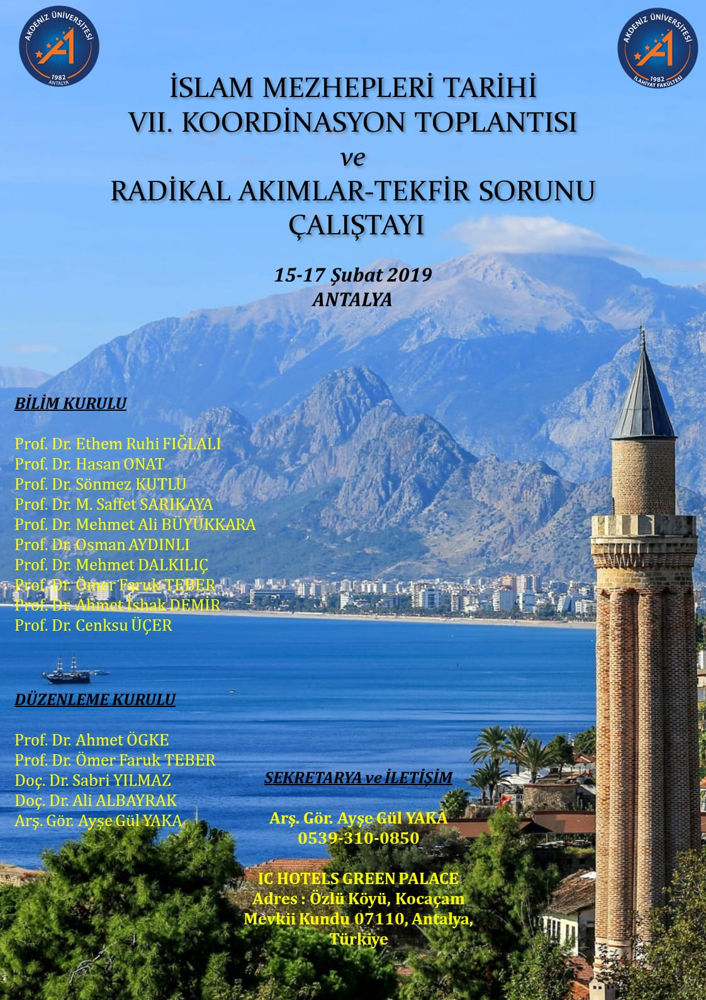
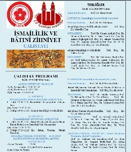

Koordinasyon Toplantıları
Anabilim dalının ülke çapındaki öğretim elemanlarını bir araya getiren geleneksel koordinasyon ve istişare toplantıları.
16 kayıt
2025 İstanbul 9. Koordinasyon Toplantısı
21-22 Şubat 2025 tarihlerinde İslam Mezhepleri Tarihi 9. Koordinasyon Toplantısı İstanbul İlahiyat Fakültesi’nde yapılması planlanmıştır. Bu yılki koordinasyon toplantısı “Hanefi Medreseleri” konulu bir sempozyumu kapsamaktadır. Buna göre 21 Şubat Cuma günü il
2023 Rize 8. Koordinasyon Toplantısı
Yedincisi 2019'da Antalya'da gerçekleştirilen İslam Mezhepleri Tarihi Anabilim Dalları İstişare ve Koordinasyon toplantılarının Covid'19 sebebiyle ertelenen 8. Toplantısı 28-30 Nisan 2023 tarihlerinde Recep Tayyip Erdoğan Üniversitesi İlahiyat Fakültesi ev sah

2019 Antalya Mezhepler İstişare Toplantısı
İSLAM MEZHEPLERİ TARİHİ VII. KOORDİNASYON TOPLANTISI VE RADİKAL AKIMLAR-TEKFİR SORUNU ÇALIŞTAYI (15–17 Şubat 2019, ANTALYA) Program için tıklayınız: http://mezhep.org/files/2019_antalya_program.pdf Programdan fotoğraflar için tıklayınız:
7. Koordinasyon Toplantısı Ertelendi
İSLAM MEZHEPLERİ TARİHİ ANA BİLİM DALI ÖĞRETİM ELEMANLARININ DİKKATİNE İstanbul Üniversitesi İlahiyat Fakültesi olarak “VII. İslam Mezhepleri Tarihi Koordinasyon Toplantısı”nın 23-24 Eylül 2016 tarihinde üniversitemiz ev sahipliğinde gerçekleştirilmesine ve "İ
İslam Mezhepleri Tarihi VI.Koordinasyon Toplantısı
Saygıdeğer Hocalarım, İslam Mezhepleri Tarihi VI. Koordinasyon Toplantısı ve Selefilik Çalıştayı inşaallah 05-06 Eylül 2015, KONYA'da gerçekleştirilecektir, programımızda sunulacak bildiriler 05 Eylül Cumartesi günü tamamlanacak, Pazar günü öğleden önce Konya

2014 Sivas Çalıştay Programı ve Kayıtları
Açılış oturumu izlemek için tıklayınız! Birinci Oturum: izlemek için tıklayınız! İkinci Oturum: izlemek için tıklayınız! Üçüncü Oturum: izlemek için tıklayınız! Dördüncü Oturum: Değerlendirme: izlemek için tıklayınız!
2014 Sivas Toplantısı
Mezhepler Tarihçileri 2014 yılı toplantısı Cumhuriyet Üniversitesi İlahiyat Fakültesi ev sahipliğinde 12-13 Eylül 2014 tarihlerinde Sivasta gerçekleştirilecektir. Çalıştay Konusu: İsmailîlik ve Batınî Zihniyet Tebliğler: "İsmailîliğin Sosyo-politik Gelişim Sür
2013 Koordinasyon ve Sempozyum Sonuç Bildirgesi
İSLAM MEZHEPLERİ TARİHİ IV. KOORDİNASYON TOPLANTISI VE ORTADOĞU'NUN GELECEĞİ AÇISINDAN Şİİ-SÜNNİ İLİŞKİLERİ SEMPOZYUMU SONUÇ BİLDİRGESİ İslam Mezhepleri Tarihi IV. Koordinasyon Toplantısı, 27-28 Eylül 2013 tarihlerinde Çorum'da gerçekleştirilmiştir. Toplantı i
2013 Şiî-Sünni Çalıştayı Web Sitesi Hizmete Girdi
27-29 Eylül 2013'te Hitit Üniversitesi İlahiyat Fakültesi ev sahipliğinde Çorum'da düzenlenecek olan İslam Mezhepleri Tarihi koordinasyon Toplantısı ve "Ortadoğu'nun Geleceği Açısından Şiî-Sünnî İlişkileri" isimli çalıştay hazırlıkları tamamlanmış ve çalıştay
III. Koordinasyon Toplantısı Sonuç Bildirgesi
III. İslam Mezhepleri Tarihi Anabilim Dalı Koordinasyon Toplantısı "İlahiyat Eğitiminde İslam Mezhepleri Tarihinin Yeri Ve Geleceği" Çalıştayı Sonuç Bildirgesi 6-8 Nisan 2012 tarihlerinde Dicle Üniversitesinde yapılan İlahiyat Fakülteleri Dekanları istişari to
12 Ekim Isparta Mezhepler Çalıştayı Program
III. İSLAM MEZHEPLERİ TARİHİ ANABİLİMDALI KOORDİNASYON TOPLANTISI İLAHİYAT EĞİTİMİNDE İSLAM MEZHEPLERİ TARİHİNİN YERİ VE GELECEĞİ ÇALIŞTAYI PROGRAM 11-12 Eylül Perşembe ve Cuma Isparta'ya Geliş ve Misafirhanelere Yerleşme 12 Eylül Cuma 12.00 Öğle Yemeği SDU Ün
12 Ekim Isparta Mezhepler Çalıştayı Son Çağrı
12-13 Ekim 2012 tarihlerinde, Süleyman Demirel Üniversitesi İlahiyat Fakültesi ev sahipliğinde düzenlenecek olan, "İlahiyat Eğitiminde İslam Mezhepleri Tarihi'nin Yeri ve Geleceği Çalıştayı" na katılacağını belirtenlerin listesi aşağıda sunulmuştur. Katılımcıl
II. İstişare Toplantısı Elazığda Yapıldı
İSLAM MEZHEPLERİ TARİHİ ANABİLİM DALI İKİNCİ İSTİŞARE TOPLANTISI, FIRAT ÜNİVERSİTESİ İLAHİYAT FAKÜLTESİ EV SAHİPLİĞİNDE, 11 HAZİRAN 2010 Cuma günü Elazığ'da gerçekleştirildi. 50'nin üzerinde İslam Mezhepleri Tarihi öğretim elemanının katıldığı toplantıda Emekl
İslam Mezhepleri Tarihi II. İstişare Toplantısı
İSLAM MEZHEPLERİ TARİHİ ANABİLİM DALI İKİNCİ KOORDİNASYON TOPLANTISI, FIRAT ÜNİVERSİTESİ İLAHİYAT FAKÜLTESİ EV SAHİPLİĞİNDE, 11-12 HAZİRAN 2010 (Cuma-Cumartesi) TARİHLERİNDE ELAZIĞ'DA YAPILACAKTIR. BÜTÜN HOCALARIMIZI BEKLİYORUZ. DOÇ. DR. MEHMET ATALAN YRD. DOÇ
15 Haziran 2007 I. İstişare Toplantısı Yapıldı
İlahiyat Fakülteleri İslam Mezhepleri Tarihi Anabilim Dalı I. İstişare Toplantısı 15 Haziran 2007 tarihinde Ankara Üniversitesi İlahiyat Fakültesinde gerçekleştirildi. Ev sahibi Fakülteden hocamız Prof. Dr. Hasan ONAT'ın başkanlığında iki oturum halinde gerçek
I. İstişare Toplantısı
İlahiyat Fakülteleri İslam Mezhepleri Tarihi Anabilim Dalı I. İstişare Toplantısı 15 Haziran 2007 tarihinde saat 09.30' da Ankara Üniversitesi İlahiyat Fakültesinde yapılacaktır. Prof. Dr. Hasan ONAT hocamızın imzasını taşıyan davetiye için tıklayınız! Davetiy